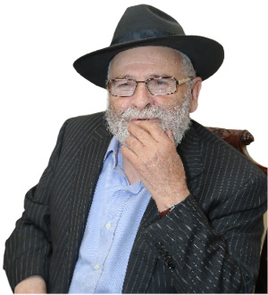
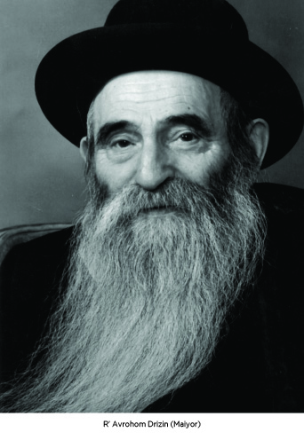
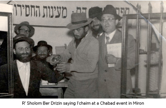
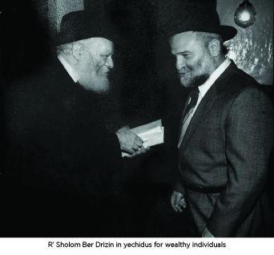

A Living Legacy of Chesed
Chassidic philanthropist, R’ Sholom Ber Drizin, who contributes millions of dollars a year to Chabad mosdos and shluchim, in a fascinating discussion with Beis Moshiach. * His childhood years of poverty, his father, the mashpia R’ Avrohom Maiyor, the life of mesirus nefesh in Soviet Russia, life in a refugee camp in a barrack with Rebbetzin Chana a”h, his relationship with the Rebbe when he was a bachur and the bracha which increased his wealth a thousand times over.

We spoke with R’ Sholom Ber about his childhood and his encounters with the Rebbe over the years. At the end of the interview we got a picture of a Chassidishe chinuch to give without limitations, with mesirus nefesh; deep roots of chesed that grew into a huge tree that provides endless fruits of tz’daka and chesed.
PERSECUTED BY THE NKVD
R’ Sholom Ber’s father, R’ Avrohom Drizin (Maiyor), was the menahel of the Tomchei T’mimim yeshivos in Soviet Russia. Consequently, he was persecuted by the communist authorities. Young Sholom Ber did not know exactly what his father did, but he constantly felt the fear in his home from every knock at the door. His father had to absent himself from his home at night for many months and sleep in a hut in the woods in fear that they would come in the middle of the night to arrest him.
In the 1930’s, R’ Avrohom’s friends were arrested, one after the other, and he was the only one who managed to escape the NKVD, time and again, in a miraculous way. R’ Sholom Ber tells us of two occasions in which his father was moments away from arrest and was saved at the last moment:
“Policemen once came to our house with an arrest warrant for Avrohom Maiyor. My father was called that because of the town he came from, Maiyor, but in his passport it said his actual family name, which was Drizin. With astonishing quick-wittedness my father coolly told them that there was an error, since the man they were looking for was Avrohom Maiyor, while his name is Avrohom Drizin. He showed them his passport and they left the house.
“Another time, the NKVD came to our house to arrest my father. When they saw that he was not at home, they decided to wait until he came. We sat there in terror and prayed that my father would be delayed and not come. But then we heard some knocks and my father opened the door. Our hearts skipped a beat. My father immediately realized who these unexpected “guests” were and knew he could not retreat, for they would chase after him and catch him. He took advantage of the fact that his clothes looked like rags and he went over to the NKVD men and asked them to have pity on him and give him a donation. They were annoyed with the “beggar” who had entered the house and chased him away shouting, “Now is not the time to collect donations! Get out of here!” He joyously did as they asked and disappeared from the scene posthaste.
“When the NKVD realized that the beggar they had chased away was none other than my father, the commander of the unit was so upset that he said he would not rest until he laid hands on him. My father’s picture was given to all the policemen in Moscow and the noose around him tightened.
“At this point, my father decided to move from the Malachovka district, where there was a Chassidishe community, to a northern suburb of Moscow. We lived with my mother’s cousin who was not a Chabad Chassid and was not under NKVD surveillance. Nevertheless, my father was still afraid of getting caught and he fled to a town named Ghzatsk, where he hid in the home of the Chassid, R’ Saadia Liberow.
“It was half a year later when things had calmed down somewhat, that my father returned and was reunited with us. This did not last long since my sisters had grown old enough for public school, which was obligatory. In these schools, they educated the children to heresy and attending school entailed chillul Shabbos. My father refused to send them to school and in order that the neighbors shouldn’t notice children at home and inform on them, my parents decided to split our family in two. My mother and sisters went to live with another cousin who lived elsewhere in Moscow, and I stayed with my father.
“My father paid for teachers to come to our house and learn Torah with me. For a while, I learned with R’ Zalman Leib Estulin, who in those years was still a bachur. He would come four or five times a week and teach me. Then I learned with Bentzion Maroz and other Chassidim.”
A CHILDHOOD OF POVERTY ALONG WITH UNLIMITED GIVING

R’ Sholom Ber relates:
“In addition to the worry of being caught by the NKVD, my father had another worry. Where could he obtain food to feed his family? We were a large family of seven children and obtaining enough food for all was a project.
“My father had a dear friend from Lubavitch by the name of Mendel Smordinski. The latter had a government job and was in charge of food warehouses for the elites of the Soviet government. There was high quality food in these warehouses and my father would go there and get large amounts of food. He left some of it for us and some of it he sold on the black market. This was playing with fire, for dozens of armed soldiers patrolled these warehouses and if my father was caught, they would have killed him on the spot. When he was asked how he could endanger his life, he said: If I don’t obtain food, my family will certainly die of starvation, while dealing on the black market is only possibly dangerous, and the Halacha is that a certainty outweighs a doubt. Until today, I have no idea how he managed to come and go unharmed.
“Despite my father’s daring forage expeditions, there were some days we starved. Till today, I remember that Acharon Shel Pesach when we had finished all the matzos and the rest of the food that was kosher for Pesach was eaten up on the previous days. We had eaten nothing since the morning and we waited for the stars to appear so we could eat some of the chametz food that was hidden in the chametz closet.”
Despite the difficulties in obtaining food and constant fear of the authorities, R’ Avrohom exuded generosity and that is how he raised his children. His home was open to any Chassid who was being pursued, and whoever did not have a place to stay in Moscow knew that he could go to the Drizins and feel at home. R’ Avrohom also helped many people with money and with whatever they needed.
Many Chassidim who lived in Moscow at this time or passed through Moscow as they fled the NKVD tell of the wonderful atmosphere in the Drizin home despite the enormous danger. R’ Binyamin Gorodetzky wrote in his memoir that even though he was an escaped prisoner, R Avrohom hosted him for many months.
His son, Sholom Ber, absorbed this incredible devotion to guests and years later founded a hospitality institution named “Beis Avrohom and Sarah” for his parents, who were hospitable like Avrohom Avinu and Sarah Imeinu.
He shared with us some of these acts of chesed that he was a witness to as a child:
“One of our guests was R’ Meir Avtzon. He was of draft age and he could be arrested on the street. During the war he hid in the cellar of our house for a few months. One day, the police caught a woman who would buy items on the black market from my father. In her interrogation, she broke and led the police to our house. My sister, who saw the woman surrounded by police, realized that they would be arriving at our house very soon. She rushed home to inform my father and we quickly removed all the illicit merchandise from the house and threw it all into the snow piled up outside.
“At the same time, my sister rushed to the train station where she met another sister who was coming with new merchandise and they hid it all on the side of the road.
“Within a short time, the police showed up. Although they did not find the black market goods, they decided to take my father for interrogation. In the meantime, they discovered the entrance to the cellar where they found Meir. They asked my mother who he was and she said he was a crazy man who had nowhere to live and we let him live in the cellar. They took him for interrogation and when my father saw him there, he said: What? You brought that lunatic here too?
“Having heard my mother refer to him as a crazy man too, they were convinced that my parents were telling the truth, but they said to my father: You should have thrown him out of the house!
“My father said: In the cold out there he would have died immediately. I couldn’t do that. He said this firmly and in the end, the policemen were convinced that he was telling the truth and released him. The next day, they also released R’ Meir. Fortunately for them, this was wartime and the police were preoccupied with more important things, like defending Moscow.
“Another Chassid who stayed in our home for a long time was R’ Nissan Nemanov. He lived with his family an hour and a half from us. Hunger prevailed in his home and it reached the point of malnutrition. He looked like a skeleton.
“R’ Nissan had gold coins which Chassidim had given as maamud money for the Rebbe. Of course he wouldn’t use that money for himself, even though he suffered from starvation, but when my father saw the situation in R’ Nissan’s home, he took action. He asked R’ Nissan to lend him the gold coins. With the money he got in exchange, he bought goods on the black market and gave it all to R’ Nissan’s family. In addition, he took R’ Nissan to our home and brought a private doctor to care for him. R’ Nissan spent many months with us and I had the privilege to observe his unique conduct from up close.
“Every morning he would get up very early, say T’hillim and Tanya by heart, learn Chassidus, and only then stand up to pray. His routine ended after noon and only then did he go and eat. He ate well with us and after several months he returned to his home much healthier.”
ARREST BY THE NKVD
R’ Avrohom trained his children to go in his ways and when he heard that R’ Moshe Charitonow was suffering from starvation, he told R’ Sholom Ber to get food for him from the black market and bring it to him.
“R’ Moshe was a big Chassid. He was one of the yoshvim (young married men who sat and learned full time) by the Rebbe Rashab. He lived with his daughter in Moscow and at a certain point my father heard that R’ Moshe was starving. My father could have sent him money, but since he wanted me to learn with R’ Moshe, he told me: Every day I will give you money so you can buy food for him and bring it to him. When you get there, sit there for a few hours and learn with him and then come home.
“I did this for a long time. I would buy bread and potatoes on the black market and since the potatoes had to be cooked, I collected wood and brought all this to the Marina Roscha shul where I cooked the potatoes and prepared a hot, nourishing meal for him.
“I was once caught in the black market and they took me to jail. I spent an entire day in prison and the interrogators tried to extract an admission of guilt from me. In my defense, I claimed the law forbade only selling on the black market but there was no prohibition of buying. The interrogator didn’t accept this and said: If you didn’t buy, they wouldn’t sell. They released me though, toward evening.”
CHESED SHEL EMES DURING THE WAR
“We celebrated my bar mitzva at home with a few people and had mashke and cake. I was able to get a copy of the maamer ‘All Yisroel have a Share in the World to Come’ which I reviewed by heart.”
At this point, R’ Avrohom involved his son more in his works of chesed. On several occasions, he sent Sholom Ber to take care of the burials of Jews who died during the war who had nobody to take care of them.
“My father found out that R’ Eliyahu Yitzchok Nissenevitz, who was a night watchman in a factory, had died. There was nobody to arrange for his burial. Since this was wartime, with hundreds of people dying every day, the factory workers wanted to place him in a central, mass grave, which would mean being buried with non-Jews. My father hired a gentile and sent me with him to get the body and bring it to burial in a Jewish cemetery. After putting shrouds on the body, I dug the grave with the gentile and I buried him in the cemetery.
“Another time, it was in the middle of the winter and we had to bury a woman. The earth was frozen and the gentile suggested placing her in the snow and once the snow melted, we could bury her in the ground. I refused to consider this and said that my father told me to make sure she was properly buried. We worked very hard together until we managed to dig a grave.
“After each of these burials, I went to the room belonging to the chevra kadisha and wrote down the name of the deceased in the ledger and where he or she was buried. Since I did not know the names of the sections, I only wrote that I dug a grave about two meters north of this grave and one meter east of that grave …”
FLEEING MOSCOW WITH THE AID OF A JEWISH POLICEMAN

R’ Sholom Ber spoke about those difficult times:
“My father was very nervous about the long trip to Uzbekistan. We were a relatively large family with seven children and he was sure that on a trip like that during wartime, some of the children would die. So we remained in Moscow even after the Germans arrived at the gates of the city. The miracle was that they came from the south side of the city and we were in the north, but the distance between us was less than ten kilometers and we felt like we were literally at the front.
“Near our house was the main highway from Siberia to Moscow and all night we would hear thousands of soldiers, tanks and other military apparatus arriving from Siberia. Only then, when death was at our windows, did my father agree that it was preferable to flee to Samarkand, especially after he heard that a yeshiva was operating there so I could learn in a structured framework.
“We went in several groups. My father was the last one remaining. He hid in the Marina Roscha shul and was afraid to walk around in the street lest he be caught by the NKVD. He came up with a creative solution. In exchange for a large sum of money, he found a Jewish policeman who agreed to help him and take him in a police car, with him in handcuffs, to the train station. It was only once he was placed on the train heading for Samarkand that he could breathe a sigh of relief.”
COME SLEEP IN THE CEMETERY TONIGHT
Upon arriving in Samarkand, sixteen year old Sholom Ber joined Yeshivas Tomchei T’mimim. During the war, the NKVD looked away from the Chassidim’s activities to the point that they could run the yeshiva without fear.
The rosh yeshiva was R’ Zalman Shimon Dworkin, and R’ Zalman Levitin (Haditcher) taught Chassidus. The learning took place in a house with a large room where they slept at night. In the morning they put the mattresses on the side and turned the room into a beis midrash. R’ Sholom Ber remembers his classmates: R’ Shlomo Chaim Kesselman’s twin sons, R’ Zelig Katzman, R’ Sholom Ber Pevsner, R’ Sholom Ber Chanowitz (Odesser), R’ Sholom Levertov (Kublaiker), R’ Mosher Levertov (Kublaiker), R’ Zalman Shur, R’ Chaim Meir Minkowitz, R’ Herschel Chitrik, R’ Yossel Reitzes, and R’ Chaim Serebryanski. R’ Leib Henoch Menkin also learned with them for a while but he died of malaria.
The Chabad community and the other Jewish refugees were hard hit by malaria and typhus and many Jews died every day. But by the time Sholom Ber arrived in the city, the situation had stabilized somewhat and the average per day was “only” two or three dead.
When R’ Aharon Yosef Blinitzky, who was a member of the chevra kadisha in Samarkand, heard that Sholom Ber had experience in burying the dead, he asked him to join the holy work. But despite his experience, nothing prepared him for this:
“One day, R’ Aharon Yosef told me that, as usual, they had dug some graves that day so they would be ready, but boruch Hashem, nobody had died. Since we don’t leave a grave open overnight unless someone sleeps in it, he asked me to come with him to the cemetery to sleep in a grave that night.
“When he saw that I was trembling in fear just from the idea of being alone in a grave at night, he tried to reassure me and said he would bring a long rope and he would hold one end of it and I would hold the other end. If something happened in the middle of the night, I could pull on the rope and he would immediately come and see what was happening.
“Despite his attempts to reassure me, I was terrified to sleep in the cemetery, especially after I found out that jackals frequented the cemetery at night and tried to drag corpses out of their graves. We buried the dead very deep in the ground so that the jackals would not, G-d forbid, reach the bodies. I refused his request and continued helping bury the dead but did not sleep in the cemetery.”
SLEEPING IN THE LION’S DEN
After World War II ended, Russia and Poland signed an agreement in which Polish refugees could return home. Since many of them had died during the war, it was possible to buy their documents and leave Russia in the guise of Polish citizens.
Sholom Ber, together with his sister Yehudis and brother-in-law, Mordechai Levin, flew to Moscow via Alma Ata. It was a freight plane that brought fruits and vegetables for the Russian army in Moscow. Upon paying a bribe, the pilot agreed to let them sit on the boxes of potatoes until they reached Moscow.
From Moscow, Sholom Ber flew to Kiev and from there to Lemberg. He tells of an incident that took place in the airport in Kiev that could have ended in tragedy:
“The airport was full of people and I was very tired and couldn’t find a place to rest. Then I noticed an open door and a bed inside a room. Being exhausted, I did not notice the sign over the entrance which said that only NKVD personnel were allowed. R’ Mordechai Rabkin, who was also traveling to Lemberg, saw me in the room and did not understand how I wasn’t afraid to sleep in the lion’s den. To my good fortune, nobody came and I had a few good hours of sleep there.
“Upon arriving in Lemberg, I was arrested when I left the plane. I had no idea whether this had anything to do with my sleeping in the NKVD room or not. They told me: We know where you are going. Give us the gold you are smuggling with you. I told them honestly that I was a young man and where should I have gold from? I managed to convince them that I was speaking truthfully.
“Although they were finally convinced I had no gold, they did not readily let me go. They asked me who I was going to meet. I said I was supposed to go to a certain street where I would be met. They released me but followed me in order to try and catch the one who would come to take me. I sat on a stone on the street and prayed that whoever was supposed to contact me would be careful and notice that I was being followed. In fact, that is what happened. They waited and waited and when the hour grew late, they said they had to go home and they left.
“A few minutes later, a Lubavitcher appeared. He said he had noticed the NKVD, which is why he had been delayed. He brought me to where I’d be staying and I met R’ Leibel Mochkin who arranged our Polish papers for us.
“Rebbetzin Chana a”h was on the same train as us and my father sent me to bring her bread so she wouldn’t go hungry. After a long journey, we reached the Poking-Waldstadt refugee camp where they placed families in long barracks.
“Rebbetzin Chana lived in our barrack. One day, my father sent me to fix the door of her room because it wasn’t closing properly. I am not gifted with the ability to do jobs of that sort, especially when the wooden door was half rotten and all the nails were crooked. A rock I found outside served as my hammer.
“I worked for a few hours and sweated plenty but the door was still not fixed. The Rebbetzin had pity on me and apologized for causing me so much bother, but she simply could not have a door that did not close. I told her that my father ordered me not to leave until I fixed it. It took some more time and I finally fixed it.
“The Rebbetzin was grateful, and many years later when I arrived in the United States, she invited me to visit her several times in her home. A number of times, when I was in her house, she told me that the Rebbe was coming and since he stayed only a short time, she suggested that I go to another room until he left.”
AN OFFER FROM THE MOSSAD
From Germany, R’ Sholom Ber went with his fellow T’mimim to Brunoy where he learned for a few months in Yeshivas Tomchei T’mimim. He made aliya in 5708. War broke out shortly after he arrived in Eretz Yisroel and he was drafted into the army.
After the war was over, the Israeli Mosad wanted to enlist him. R’ Sholom Ber was not thrilled with the idea, but they convinced him to take a preparatory course that lasted a month and then to decide. After a month in this special course, his opinion had not changed and he left for civilian life.
He lived in Kfar Chabad for a few years and went to the Rebbe for Rosh HaShana 5718. In his first private audience with the Rebbe, the Rebbe told him he did the right thing in coming to New York. In that yechidus, R’ Sholom Ber told the Rebbe about his life. When he mentioned the Mosad’s request, the Rebbe took a great interest in the details and wanted to know precisely what they had taught him in the course.
“Nearly ten years had passed since the course and it was hard for me to remember details, but the Rebbe quizzed me and wanted to know every detail.
“Since I was an older bachur, nearly thirty years old, the Rebbe urged me to listen to shidduchim suggestions and said that I should write him of ideas that came up and report to him after each meeting. I had yechidus a number of times in that period and the Rebbe was very involved in my shidduchim. I would tell him about meetings and the Rebbe would ask for details and encourage me to continue looking.
“After several months passed and I had not found a suitable shidduch, the Rebbe said that apparently, the reason for the delay was the language barrier. He suggested that I go to Eretz Yisroel.
“I tarried a bit in New York, and then one Shabbos in the middle of the farbrengen the Rebbe said: Sholom Ber Drizin should come up and say l’chaim for his trip to Eretz Yisroel to get married. Within seconds I was lifted onto the table and the next second I had a cup and the Rebbe looked at me and told me to say l’chaim.
“When a few weeks had passed and I still hadn’t left, the Rebbe brought it up again at a farbrengen and this time he said it more clearly: Sholom Ber Drizin will come up and say l’chaim and say when he is going to Eretz Yisroel.
“Of course, I did not delay any longer but went to Eretz Yisroel where I married my wife Shoshana, nee Seidman.”
A BRACHA FOR BUSINESS

His brother Mendel had yechidus, in the course of which the Rebbe said to him: Tell your brother that he shouldn’t be brokenhearted about not succeeding with the nursing homes, because I don’t hold of that.
At one point he bought a house on Crown Street:
“It was when the blacks had come into the neighborhood and Jews began moving out. The price of houses dropped drastically and we had an opportunity to buy a house for $24,000. I also had an option to buy a bigger house on President Street for $30,000. I was more inclined to buy the bigger house but my wife preferred the house on Crown Street since her friends lived close by.
“I asked the Rebbe who told me to buy the house on Crown. In that response, the Rebbe wrote in connection to parnasa, I should buy the house on President Street and another ten houses in Crown Heights. As I said, Jews were leaving in droves and the Rebbe greatly encouraged me to buy up houses in the neighborhood. The Rebbe saw that with a relatively small investment, I could earn a lot of money. Unfortunately, I wrote to the Rebbe that I did not have enough money to buy these houses. I had barely managed to buy my own house. The Rebbe did not respond. I had a good opportunity but I lost it.”
A short while later, in yechidus, the Rebbe gave him a special bracha for success in business. To R’ Sholom Ber there is no question that it is only because of this bracha that he has become the wealthy man he is today:
“It was in a yechidus in 5726, after I told the Rebbe about my unsuccessful business attempts. The Rebbe told me to focus on buying apartment buildings and blessed me to ‘always earn more than you think.’”
Since then, his mazal began to shine. As far as he is concerned, he received the best bracha that a businessman could hope to get and from then on, he no longer wrote to the Rebbe about his business matters. Even when he experienced crises, he trusted in the Rebbe’s bracha and knew that he would rise above it all and would earn much more than he thought he would.
SELL THE STOCK AND DON’T BUY ANYMORE
“One year, I decided to try my luck in buying stock. It was during the summer and right after I bought some stock I went to the mountains. Since I wanted to know how my stock was doing, I would buy The New York Times every morning and read the business news.
“On the first day, I was happy to see that the value of my stock had gone up by $1000. That was a lot of money in those days. But the next day I lost $1300, i.e. the profit plus $300 from what I had invested. My stock went up and down, as stocks do, and I saw how it robbed me of my peace of mind and was ruining my vacation.
“I wrote to the Rebbe about this and quickly received a response: Immediately sell what you already bought and don’t buy any more stock.”
THE DONATION TO MACHNE ISRAEL AND THE BIRTH OF TWIN GRANDCHILDREN
In 5747, R’ Sholom Ber joined the special group of wealthy people who donated large sums to the Rebbe’s activities through Machne Israel and had special private audiences with the Rebbe. During yechidus, in Adar 5747, R’ Sholom Ber asked for a bracha for his daughter Esther and her husband Menachem Mendel Schneersohn, who were married for a number of years and did not have children.
After the yechidus, the Rebbe wrote him a special letter with brachos for his joining the Machne Israel fund. The Rebbe wrote that his request for his daughter and her husband would be read at the tziyun in an auspicious time and “may Hashem grant him success to relay good news.”
A year later, R’ Sholom Ber was able to report that his daughter was pregnant and in Tishrei of 5749, twin grandchildren were born.
In a yechidus held for members of Machne Israel after the passing of the Rebbetzin, R’ Sholom Ber told the Rebbe that all those present shared in the Rebbe’s sorrow; the Rebbe’s pain was the pain of them all. The Rebbe looked at him in surprise and said: Pain? And he raised his hand in an encouraging motion and loudly said: Simcha!
WHEN YOU SEE THE BACHURIM YOU SEE “YECHI”
There is a thought from our Rebbeim that you need a special “sense” when it comes to giving tz’daka. R’ Sholom Ber can definitely be said to be someone who gives tz’daka with a special chush, both in who he chooses to give to and how he gives.
Throughout this interview, whenever I mentioned his large donations, he looked uncomfortable and didn’t understand why a big deal was made of this:
“The bachurim want to come to the Rebbe, so I help them,” he said simply. He doesn’t think this is something special; after all, he is just doing what he can do. It was only at the end of the interview, when I asked him what moves him to contribute such large sums every year to enable the bachurim to come to the Rebbe for Tishrei, as well as the large sums that he gives to Hachnasas Orchim, that he said, “It is thanks to these bachurim and these guests that we feel that the Rebbe is alive. This year, for example, 3000 bachurim came, 1000 girls, and another 1000 married men or couples. I look at them and marvel. These are bachurim who never saw the Rebbe and yet they come with such sincerity and such simple faith. They receive full room and board, thanks to R’ Menachem Mendel Hendel, but they still don’t have the comforts of home. They come anyway and I admire them for this!
“After Gimmel Tammuz, I had a business meeting with a wealthy man. The topic of Lubavitch came up and he spoke disparagingly and predicted that in a few years there wouldn’t be any more Lubavitchers. A few years ago, I was passing by 770 with him during Tishrei. I stopped and asked him to come into 770. When he saw the thousands of bachurim sitting and learning, with the names of the yeshivos in Eretz Yisroel on the wall, he was astounded and he said: I take back what I said. He gave me a big check for Chabad mosdos.
“The Kinus HaShluchim is also a testimony to this amazing phenomenon. Twenty years ago, there were a few hundred Chabad houses. Today, there are over 4000 Chabad houses and the old Chabad houses have doubled and tripled their work.
“It says that more than the householder does for the poor man, the poor man does for the householder. When I have the privilege to donate to the T’mimim, that is exactly how I feel. The bachurim give us life. When we see them coming for Tishrei and living with the emuna p’shuta that the Rebbe is Melech HaMoshiach and will immediately redeem us, we see Yechi.”
Beis Moshiach (staff). "A Living Legacy of Chesed." Beis Moshiach, no. 910 (January 7, 2014).